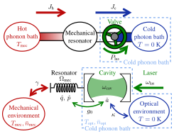

Juliette Monsel¶

Je suis une chercheuse postodoctorale dans le groupe de Janine Splettstoesser au Département de Microtechnologie et Nanoscience à Chalmers University of Technology, à Göteborg, Suède.
J’ai fait mon doctorat sous la supervision d'Alexia Auffèves à l'Institut Néel (CNRS, Université Grenoble Alpes) à Grenoble. Ma thèse, intitulée Thermodynamique quantique et optomécanique, a reçu un prix de thèse Springer et a été publiée dans la série Springer Theses en 2020.
Les sujets de recherches qui m’intéressent sont :
la thermodynamique quantique
les systèmes quantiques ouverts
l’optomécanique
l’optique quantique
le transport électronique
Récent¶
Nouveau preprint – 28 mars 2021
Ultrastrong coupling between electron tunneling and mechanical motion
Florian Vigneau, Juliette Monsel, Jorge Tabanera, Léa Bresque, Federico Fedele, Janet Anders, Juan M. R. Parrondo, Alexia Auffèves, and Natalia Ares

We have measured and modelled the coupling strength between single-electron tunneling and nanomechanical motion in a fully-suspended carbon nanotube device. We have found it to be well within the ultrastrong coupling regime, thus opening exciting perspectives for both fundamental research and quantum technologies.
This work is part of the FQXI project Nanomechanics in the solid-state for quantum information thermodynamics.
Nouveau preprint – 5 mars 2021
Optomechanical cooling with coherent and squeezed light: the thermodynamic cost of opening the heat valve
Juliette Monsel, Nastaran Dashti, Sushanth Kini Manjeshwar, Jakob Eriksson, Henric Ernbrink, Ebba Olsson, Emelie Torneus, Witlef Wieczorek, Janine Splettstoesser
Ground-state cooling of mechanical motion by coupling to a driven optical cavity has been demonstrated in various optomechanical systems. In our work, we provide a so far missing thermodynamic performance analysis of optomechanical sideband cooling. We examine various performance quantifiers to get a full picture of the thermodynamic process and use them to benchmark different experimental platforms. Importantly, in addition to the standard optomechanical setup fed by coherent light, we investigate two recent alternative setups: replacing the coherent laser drive by squeezed light or using a cavity with a frequency-dependent (Fano) mirror.
This work arises from a collaboration between Janine Splettstoesser’s theoretical group and Witlef Wieczorek’s experimental group to investigate thermodynamics with optomechanical setups.